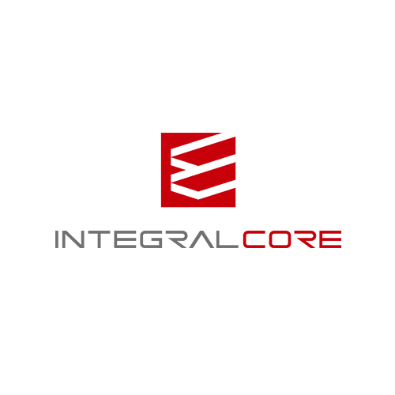

■ヴァル研究所
・mixway API
MaaS事業者のためのAPIです。シェアサイクルやデマンドモビリティなども組み合わせた複合経路検索や、フリーパスにも対応した運賃・料金計算などをアプリに簡単に実装できます。
・MaaS向けユーザーサポートセンター
アディッシュプラス社と共同提供するMaaS向けユーザーサポートセンターです。MaaSアプリや実証実験のユーザビリティ向上とMaaS提供者の負担を軽減します。
■小田急電鉄【10月11日(金) 講演！】
・MaaSアプリ
小田急グループが保有する多様な交通サービスや生活サービスを、シームレスに1つのサービスとして利用できるアプリです。
ヒト、モノ、家、店舗のデジタル化によって生まれる
新しいビジネスが分かる3日間。
2019年10月9日(水)～11日 (金)10:00～17:30
東京ビッグサイト 西3ホール
（エントランスホール右手すぐのエスカレータで4Fへ）
主催
-
協力
-
-
日経クロストレンド・セミナー・プラス会員向けセミナーはコチラ
TOPICS
たくさんのご来場ありがとうございました。
10月9日（水）
10月10日（木）
10月11日（金）
3日間合計
来場者数
4,623人
5,460人
4,953人
15,036人
プレス（日経BP含まず）
68人
76人
58人
202人
合計
4,691人
5,536人
5,011人
15,238人
前回実績（2018年）
11月28日（水） 6,614人
11月29日（木） 6,577人
合計 13,191人
①「人間拡張」展示ブース
ロボットやAIなどを駆使して人間の能力を高める「人間拡張」。未来の技術と思われがちだが、実は産業化が迫っている。次のメガトレンドである人間拡張の最新デモを展示する。
・「センシング＆モデリング技術」産業技術総合研究所
・「パートナーロボット ugo（ユーゴー）」Mira Robotics
②「2019年ヒット商品」総選挙
日経トレンディの12月号恒例企画「ヒット商品ベスト30」。今年は日経クロストレンドと共同で選考し、11月2日発売の本誌にてランキングを発表する。「日経クロストレンドEXPO 2019」では、今年流行った商品・サービスをいち早く陳列。来場者による「2019年にヒットしたモノ」の投票を実施し、その結果は日経トレンディの誌面にも掲載する。展示ブースまで、ぜひお越しください。
日経クロストレンド EXPO イチオシセミナー
講師一覧
10/9
10/10
10/11
会場マップ
出展社一覧
小間番号
3240
ヴァル研究所／小田急電鉄
【ヴァル研究所】MaaS実現を支えるAPIとサポートセンター＆【小田急電鉄】MaaSアプリ
3132
AKRacing
AKRacingは究極のゲーマー用チェアを目指し、カーレーシングシートの技術に裏付けられた先進的な設計を取り入れて開発されたプロフェッショナル仕様のチェアブランドです。
本展示会では、放送開始20年を迎え今夏公開された劇場版も大きな話題を呼んだ人気アニメ「ワンピース」とコラボレーションしたスペシャルゲーミングチェアを展示いたします。
3323
EVERRISE
顧客の今を掴む！次世代DMPとして注目を集めるCDP「INTEGRAL-CORE」をご紹介
CDPは、オンライン上にバラバラに存在するユーザーの行動履歴、広告流入データに加え、オフライン実店舗での行動データなどを収集、統合することで、ひとり一人の姿をリアルタイムに可視化し、広告配信の最適化、顧客理解、顧客体験向上を目指すためのデータ基盤です。
ブースでは解説マンガの配布、事例のご紹介、デモ画面をご覧いただけます。
3140
エンプラス
エンプラスは射出成形による精密ギヤに加え、光束制御技術を用いて幅広い波長帯を使ったデモ展示を行います。
エンプラスは、創業以来エンジニアリングプラスチックの精密加工をコア技術として、高精度・高機能製品を供給して参りました。当社の製品は金属やガラスをプラスチックに置き換える市場だけではなく、水処理やバイオ関連市場、通信など新しい分野でも導入されています。
展示会では光束制御技術を用いた紫外線による殺菌、可視光を使った高精度マーカ、赤外線による画像の可視化、将来の５Gにも使われるミリ波通信を見越した光通信によるドローンの飛行等、幅広い波長帯を使ったデモンストレーションを通し、樹脂成形部品の可能性を提案します。
当社製品を使用したアプリケーション例を展示ブースにてご覧ください。
3245
QDレーザ
網膜走査型レーザアイウェアの次世代機RETISSA Display IIを初公開。実機をご体験頂けます。
RETISSA DisplayⅡはQDレーザが2018年に実用化した網膜投影HMDの次期モデルです。
フレームに搭載した超小型プロジェクタにより映像を網膜に直接投影します。原理的に眼のピント位置や、ピント調節能力の影響を受けにくい特長がある為、近視や遠視、乱視、老眼など視力に課題がある人でもメガネなどの矯正なしで、クリアな映像を見ることができます。以前のモデルより解像感が大幅に向上し、さらなる軽量・小型化を実現しています。また、プロジェクタ部分は簡単に取り外しができ、両眼化やプロトタイプへの組み込みも容易になりました。ブースでは実機をご体験いただけますので是非ご来場ください。
3142
コニカミノルタ
安く簡単に素早く。知りたい腸内細菌見える化プロジェクト
安く簡単に素早く、知りたい腸内細菌を見える化する「PonPon CODE(ポンポンコード)」を開発中。
大阪大学との産学連携による画期的な新技術を開発し、腸内フローラの解析を手軽に行えるようになります。スマホアプリと連携したサービスにより、解析結果と生活改善のアドバイスを提供します。
3143
スタッフ
ものづくりONE-STOPトータルソリューション
オープンイノベーション大賞科学政策担当大臣賞を受賞した株式会社スタッフが提供する、”スタートアップ企画をカタチにする”製品開発のためのものづくり技術がギュッと詰まった製品実績を体験いただけます。
①仲間と安心して楽しめる飲み会を！学習型IoTアルコールガジェットTISPY２
飲み過ぎ、二日酔いをアドバイス表示で防止。アルコールセルフケアデバイス。
・大切な仲間やゲストにもTIPSY2を体験してもらえる「ゲストモード」が進化。ゲストにも飲み方をアドバイス。
・日本語、英語、中国語、韓国語の4ヶ国語に対応。グローバルなゲストと交流するきっかけに。
②3分間のリフレッシュ新体験。木工バイタル呼吸型センシングデバイスkitoki
ヒノキの筐体を握り、手汗の量を分析。緊張状態には深呼吸を促すセンシングデバイス。
ものづくりONE-STOPトータルソリューションパートナー＝開発設計から試作、量産まで＝
3214
スプリームシステム
タグ不要！センサーによる店内動線分析Moptar（モプター）【体験可能】
Moptarは、タグ不要でセンサーなどによる動線追跡を行います。動線データは分析して店舗レイアウト改善などに活用するほか、リアルタイムに店内状況を確認したり、特定の行動（レジ待ち、接客必要性、防犯など）を通知します。
また、店内の動線情報をもとに、メール、アプリ、デジタルサイネージなどで興味のある商品情報をOne to Oneでアプローチできます。Webの閲覧履歴や過去の購買情報、店内購買情報そして動線情報を追加することでOnlineとOfflineを統合したOMOを実現します。
ブースでは動線追跡をご体感いただける予定です。ぜひご体感ください。
3241
デンソー
五感を刺激する、デンソー車内快適VR体験
VRを使用して、自動運転（Level 4）が導入される2025～2030年にタイムスリップ。未来の車内空間で五感を刺激する4つの「快適」を体感いただけます。
[リラックス] つつみこまれるような空調、落ち着く香り、好きな景色と音楽で「穏やか」。
[フォーカス] 首元への冷風と、スッキリする香りで、仕事や運転に「集中」。
[スリープ] 音と光を遮断し、温もりと保湿によって、短時間の仮眠で「休息」。
[エナジー] 長時間の運転でも、だるさを軽減させ、活力を上げます。
※体験には会場で配布する整理券が必要です（無料）。
※イメージ映像は「https://www.injoy.jp/」で配信中。
3120
Data Science Fes 2019
zero to oneデロイト トーマツ グループ東京大学エクステンション日本テラデータMOLCURE
産・官・学が共創するデータサイエンス関連イベント
Data Science Fes 2019（主催：日本経済新聞社）は、2019年9月30日から11月29日までの2か月間、「データ・AI社会」に向けて産・官・学が共に学び、考えるプロジェクト。同プロジェクトパビリオンでは、協賛企業のzero to one、デロイト トーマツ グループ、東京大学エクステンション、日本テラデータ、MOLCUREの5社が展示、オープンセミナーを実施する。
3111
トライベック・ストラテジー
いつもの業務にちょい足しマーケティング 国産MAツール「HIRAMEKI management」
トライベック・ストラテジーは『つなぐデジタル』をコンセプトに、創業以来一貫して企業のデジタルマーケティング支援を実施しております。
展示ブースでは、マーケティングオートメーションツール「HIRAMEKI」（ヒラメキ）をご紹介。
いつもの業務の効率化から始めるちょい足しマーケティングから、顧客データやLINEを活用した最新のマーケティングまでをライトにはじめていただけるサービスとなっております。
3020
Viibar
企業のマーケティング目的に合わせて、動画の企画から制作・運用・効果検証までを一気通貫で実施
Viibar（ビーバー）は、「企業向け動画サービス」、「メディア向け動画サービス」、「SaaS」の3つの事業を展開しています。
展示のメインとなる「企業向け動画サービス」では、企業のマーケティング課題に対し、動画の企画から制作・広告運用までを一貫してご提供。ブースでは、実際に動画マーケティングを実施された企業様の事例やその効果について展示します。
3230
PLAZMA 2019
トレジャーデータSATORIzero to oneDataCurrentブライトコーブブレインパッドLegolissLookerONE COMPATH
【PLAZMA2019】Let's Shape the future!〜イノベーションを共にする真のパートナー〜11社出展
最新のデータ活用事例を学ぶイベント「PLAZMA」。今回は日経クロストレンドEXPO内で開催します。
ブースではトレジャーデータ及びパートナーの全11社が共同出展し、各社のライトニングトークを披露します。データ活用のための様々なソリューションをご紹介しておりますので、ぜひPLAZMAブースへ足をお運びください。
【共同出展社：データカレント、ブレインパッド、ブライトコーブ、Crescendo Lab、Legoliss、Looker、ONE COMPATH、SATORI、クロスリスティング、zero to one ※アルファベット順】
3216
フルカイテン
在庫問題を解決するクラウドサービス『FULL KAITEN』
“AIによる予測技術”と“特許出願中の独自技術”を搭載したこのサービスを利用すると、在庫適正化と経常利益増加を両立できます。
3011
プレイド
CX（顧客体験）プラットフォーム「KARTE」のご紹介
ウェブサイトやアプリへ来訪したお客様の行動をリアルタイムに解析して一人ひとり可視化し、個々のお客様にあわせた自由なコミュニケーションをワンストップで実現するCX（顧客体験）プラットフォーム「KARTE」のご説明、デモ等を実施します。
3021
MIL
Design a New Movie Experience 新しい「視聴体験」をつくる
MILは日本発の「インタラクティブ動画編集プラットフォーム」であり、無料会員登録後、誰でも簡単にインタラクティブ動画を編集することが出来ます。
動画内の「ヒト・モノ・コト」に情報を埋め込む（タグを付ける）ことで、視聴者に“アクションを求め・促す”動画を編集・制作できます。具体的には「ストーリー分岐・外部リンク・ポップアップ・電話・クーポン・アンケートフォーム」などの機能追加が可能です。
制作した動画の視聴データは、視聴者のインサイトとしてレポートに蓄積されるため、そのデータをもとにクリエイティブを改善できる点も大きな特徴です。
3114
LIDDELL
SNSを飛び出して、人気インフルエンサーがブースに集結！あなたの疑問に直接回答します
LIDDELL(リデル)が運営する業界シェアNo.1のインフルエンサーマーケティングプラットフォームから、現役の人気インフルエンサーたちが集結します。
ヒットやトレンド、話題づくりに欠かせないSNSを使った施策に関心はあれど、「やり方がわからない…」「コスト感は？」果ては「効果を上げるためには？」などなど、
貴社の疑問や質問にインフルエンサーが直接回答致します。もちろん弊社専門スタッフがサポートのうえ、ブースで貴社に最適なソリューションを見出せること間違いなしです。
3210
ロケーションバリュー
短期間・低価格・柔軟に公式アプリを開発
展示ブースでは、各アプリ機能（モジュール）や導入金額、ランニングコストなどを説明。ランニングコストなどを説明。また現在公開されているアプリから、導入された背景、導入したモジュール、効果などを解説します。実店舗を運営している企業を対象にした公式アプリ開発サービスです。豊富なアプリ機能（モジュール）から、欲しい機能を選択し、組み込むことで自社オリジナルの公式アプリをが短期間・低価格で実現できます。モジュールに無い機能はオーダーメイドで柔軟に開発できます。展示ブースで具体例や裏話などを披露。機能や価格について気軽にご質問ください。
3130
ヤプリ
アプリの開発・運営・分析がワンストップで可能なアプリ開発クラウド「Yappli」
Yappliはモバイル戦略を成功に導くアプリ開発サービスです。高品質なネイティブアプリがiPhoneとAndroid同時に作成可能で、操作性に優れた管理画面と分析ツールでPDCAを素早く回すことができます。クラウド経由で継続的に新機能が追加され、OSバージョンアップも即座に対応。国内拠点による安心のサポートとアプリを成功へ導く専門チームがいることも私たちの大きな特長です。現在300社以上の導入実績があり、オムニチャネル、O2O、オウンドメディアなどのマーケティング支援から社内利用、BtoBなどの業務支援まで幅広く活用されています。
来場時の注意事項
FAQ
日経IDのメールアドレス・パスワードが分かりません。
こちらからご確認ください。
登録画面を印刷できません。
受付にてスマートフォンやタブレット端末画面より「展示会入場券」をご提示ください。
無料招待券を持っているが、Webからの事前登録は必要ですか？
招待券持参者は展示会場受付で登録が必要です。スムーズにご入場いただける事前登録をお勧めします。
無料招待券で当日受付したい。
無料招待券の裏面に必要事項を記載のうえ、お名刺2枚とともに当日登録受付にご提示ください。
※簡単な事務手続きが発生いたします。
当日でもWeb事前登録できますか。
Web事前登録は稼働しています。受付前にWeb事前登録を済ませていただけます。その場合、スマートフォンやタブレット端末画面より「展示会入場券」をご提示ください。
セミナー受講の注意事項
セミナー申し込み完了後のWeb画面から「セッション受講券」を印刷てお持ちいただくか、または、スマートフォンやタブレット端末画面より「セッション受講券」をご提示ください。
※「セッション受講券」は下記、Myページから印刷が可能です。
開演5分前を目安に当日受付を行います。事前にお申し込みされたセミナーでも立ち見になる場合や講演資料を差し上げられない場合がありますので、あらかじめご了承ください。
また、開演後は入室をお断りする場合がありますのでご注意ください。
すでに満員となったセミナーに参加できますか。
事前登録された方から、セミナー会場にご案内します。
開始前の空席状況により当日受付を行います。キャンセル待ちをご希望のお客様は当日直接、各セミナー会場受付までお越しください。
日経クロストレンド EXPO 2019 関連イベントのご案内
「Data Science Fes 2019」
DSFes学生コンペティション
学生データコンペティション 本選（最終選考）・表彰式
日時：2019年10月9日（水）13:00～17:00
場所：東京ビッグサイト 会議棟 1F
◆プログラム
12:30 開場
13:00 特別講演
「データサイエンティストが本音で語る！学生が働きたい職場とは？企業が受け入れたい学生とは？」
デジタルガレージ 執行役員 チーフデータオフィサー 渋谷直正 氏
大学院生 2名
モデレーター：野村総合研究所 ICT メディア・サービス産業コンサルティング部上級コンサルタント鈴木 良介 氏
13:30 開会のあいさつ
学生データコンペティション本選レギュレーションの説明
14:00 分析部門：パネルディスカッション
30分間
14:30 ビジネス提案部門発表
3チーム×15分間プレゼンテーション
15:30 協賛講演
➀「AIでつくれ！「バブル崩壊味」のチョコレート ～人とAIが協奏する未来を目指して～」
日本電気 AI・アナリティクス事業部 担当 世良 拓也 氏
②「インサイトドリブン経営とデータサイエンス ～“数の暴力”を支配し、“アートの再現”を支えるアナリティクス～」
デロイト トーマツ コンサルティング Analytics & Cognitive Unit マネージャー 板倉 洋介 氏
16:00 発表・表彰式
●特別審査員・監修
鹿内 学氏（シンギュレイト）
●審査員
渋谷 直正氏（デジタルガレージ 執行役員 チーフデータオフィサー）
鈴木 良介氏（野村総合研究所ICTメディア・サービス産業コンサルティング部 上級コンサルタント）
杉山 俊幸氏（日経BP 日経クロストレンド 特別編集委員） ほか
DSFesパビリオン
日経クロストレンド EXPO 2019展示会場内に、Data Science Fes 2019関連のパビリオンを
設置します。場所は、東京ビッグサイト 西展示棟 4F 西3ホール内です。
入場には、日経クロストレンド EXPO 2019の入場バッジが必要です。
Webから事前登録（無料）していただき、入場券を入手してから、DSFesパビリオンまで直接お越しください。
DSFesパビリオンでは、会期3日間、協賛企業によるオープンセミナーを行います。
事前登録は必要ございませんので、当日、DSFパビリオン受付へお越しください。
空席がある場合、ご案内いたします。
DSFesパビリオン内 オープンセミナー スケジュール
10月9日（水）
13:00～13:30
zero to one
13:45～14:15
東京大学エクステンション
14:30～15:00
日本テラデータ
15:15～15:45
MOLCURE
10月10日（木）
13:00～13:30
東京大学エクステンション
13:45～14:15
zero to one
14:30～15:00
日本テラデータ
15:15～15:45
MOLCURE
10月11日（金）
13:00～13:30
zero to one
13:45～14:15
東京大学エクステンション
14:30～15:00
日本テラデータ
15:15～15:45
MOLCURE
講演企業
講演タイトル
登壇者
zero to one
AI人財育成最前線！〜欧米先端事例と日本での動向〜
代表取締役CEO 竹川 隆司 氏
東京大学エクステンション
データ駆動型社会のデータサイエンス教育
代表取締役社長 堀本 勝敬 氏
日本テラデータ
DX時代におけるデータ駆動型企業への5つのステップ
ビジネス価値を最大化するデータ戦略とは？マーケティング統括部 部長 佐藤 克彦 氏
マーケティング統括部 コンテンツマーケティング マネージャ 岩本 麻樹 氏
MOLCURE
人工知能、ロボット、バイオテクノロジーを融合した、次世代創薬プラットフォーム
代表取締役 小川 隆 氏
日経クロストレンド セミナー・プラス読者セミナーのご案内
「米国デジタル・リテール活用最前線」
米国では、独自の工夫で最先端のデジタルリテールやデジタルマーケティングを実現しています。一方、マーケティングテクノロジーの分野においては、サービスの「スタック」を複雑に組み合わせてマネジメントすることが求められています。今何を知っておくべきか。米国の専門イベントや現地店舗を継続的に取材している専門家や記者がポイントを解説します。
10月11日（金）14時00分～14時20分
シリコンバレー・米国最新動向
日経BP シリコンバレー支局長 市嶋洋平
イノベーションの代表例とされるウーバーやテスラはどのようにビジネスモデルを実現し、将来に向けてどのような手を打っているのか。現地での取材を基にお伝えする。
14時25分～15時20分
米国リテール最前線：Amazon Go vs Walmart
IBAカンパニー 代表取締役 射場 瞬氏
レジなし店舗のAmazon Goはどのように進化してきているのか。米国の店舗を分析した両者がポイントを解説する。また、迎え撃つWalmartはどのような戦略を描いて実行しようとしているのかについても見ていく。
15時25分～16時00分
デジタルマーケティング最前線：複雑化するマーケティングテクノロジーを見極める
クマベイスCEO 田中森士氏
米国ではマーケティング・テクノロジーの機能を「スタック」として組み合わせて、必要な機能を実現している。どのようにスタックを選び、マネジメントすればいいのか、米国などにおける活用事例を基に紹介する。
【開催概要】
●日時 2019年10月11日（金）14:00～16:00（開場13:30予定）
●会場 東京ビッグサイト・会議棟1F
●受講料 日経クロストレンド セミナー・プラス読者 無料一般 27600円（税込み、日経クロストレンドセミナープラス半年購読付き）
●定員 80名（先着順）※ 最少催行人数 20名
日経クロストレンド EXPO 2019 イベント開催のご案内
異業種、異分野が出会い、既存の事業や商品、サービスの“境界線”を飛び越え融合することで、新しいトレンドを生み出す“場”――
それが日経クロストレンド EXPO 2019。
テーマは「Create the future!（未来消費を創出するアイデアと技術）」
サブスクリプション、MaaS（モビリティ・アズ・ア・サービス）、キャッシュレス、無人コンビニ、フードテック･･････
テクノロジーの進化により、何十年何百年と続いてきた市場を根底から覆すうねりが起きつつある。
目の前に迫った2020年、僅か30年後の2050年、そこにある変化とビジネスチャンスとは――
サファイアスポンサー
プラチナスポンサー
ゴールドスポンサー
シルバースポンサー
ブース出展、セミナー協賛

名称：日経クロストレンド EXPO 2019
主催：日経BP
協力：日本経済新聞社、テレビ東京
同時開催：日経 xTECH EXPO 2019
協力媒体：日経クロストレンド、日経トレンディ
会期：2019年10月9日（水）～10月11日（金） 10:00～17:30
会場：東京ビッグサイト 西4ホール/会議棟 交通アクセス
入場料：3,000円（消費税込、招待者・事前登録者は無料）